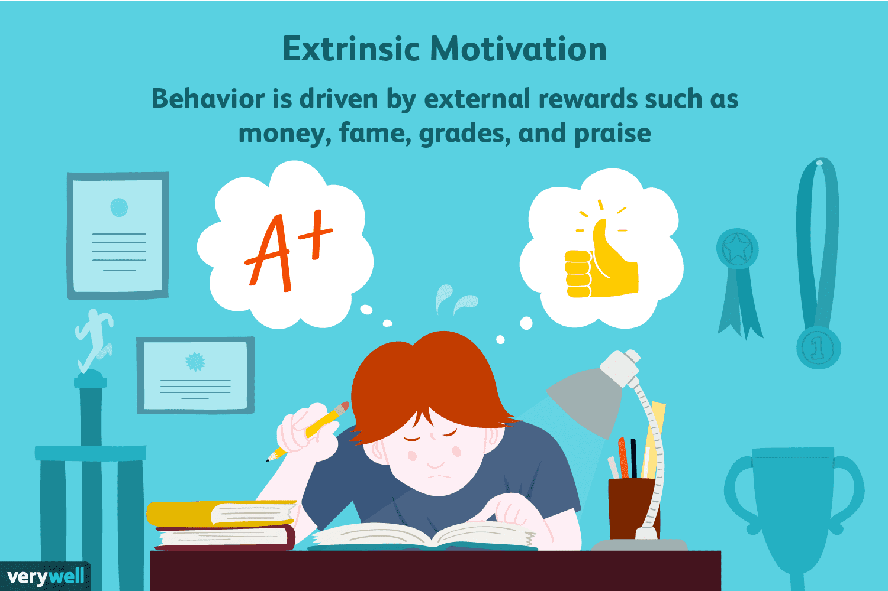

Summary
Motivation is what drives people to act, learn, and create. It can come from within, when we’re inspired by curiosity, enjoyment, or purpose, or from outside forces, like rewards or recognition. Understanding both intrinsic and extrinsic motivation helps explain how people stay engaged and creative at school, work, and in everyday life.
Intrinsic Motivation
Intrinsic motivation comes from within, people act because they love what they do. It drives creativity, persistence, and satisfaction.

According to Amabile (1997), intrinsic motivation is the key to creativity and innovation. People are most creative when they’re genuinely interested in their work, like a scientist exploring out of curiosity or an artist creating for joy.
Her Componential Theory of Creativity highlights three factors for success:
- Expertise (skills and knowledge)
- Creative-thinking skills (flexibility and risk-taking)
- Task motivation, which is strongest when it’s intrinsic
When people love what they do, they push through challenges and explore new ideas. Examples include Michael Jordan’s “love of the game” clause and John Irving, who wrote for hours purely out of passion.
Extrinsic Motivation
Extrinsic motivation relies on outside rewards such as money, praise, or grades. It can boost performance but sometimes weakens long-term interest.
Amabile (1997) found that extrinsic motivation can sometimes hurt creativity especially when people work only for rewards, grades, or approval. For instance, children who were paid to draw became less interested in drawing later.
However, not all external motivation is bad. When used properly, it can support intrinsic drive. For example, positive feedback or recognition can affirm someone’s progress and strengthen their confidence.
Fowler (2023) notes that people need more than incentives or praise, they need environments where external rewards align with internal purpose. If the workplace or classroom focuses too heavily on competition or control, motivation becomes shallow and short-lived.
Geng et al. (2022) adds that external feedback can still motivate creativity especially in teams. When groups receive developmental feedback from managers or clients, they feel valued and driven to improve. The key is that feedback should build competence and autonomy, not pressure or comparison.